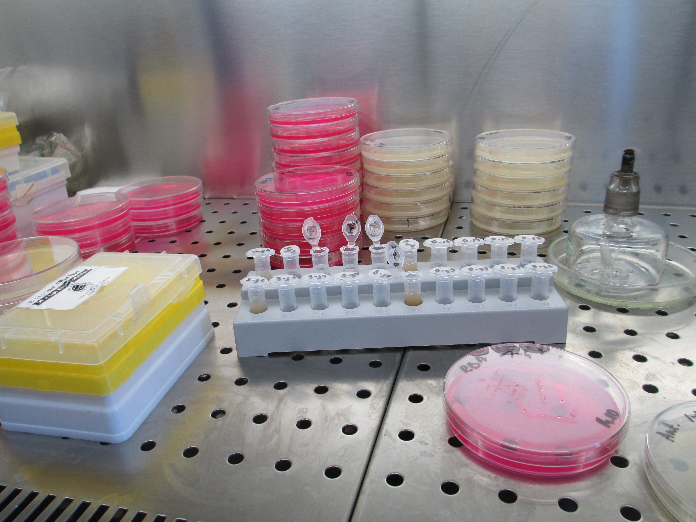

Bacteria in space biotechnology
Written by Oscar Wong ..... 9 January 2025
When exploring biotechnology in space, our research explored all of microbiology for its uses, but particularly on fungi. However, microbes and microbiology includes both fungi and bacteria, but in this article, we’re going to focus primarily on bacteria as it also has immense potential for its versatile applications in space research and biotechnology.
When we think of bacteria in the context of space exploration, the first concern is often their potential to pose health risks and so a lot of research into microbiology in space focuses on the dangers and changes to bacteria. This is dedicated to understanding these risks and mitigating them to ensure astronaut safety. If a person needs to be in an isolated, contained container as they travel through space, the microbiome needs to be studied to ensure it doesn’t lead to adverse effects; it is just one of the many factors that researchers need to consider when regarding space travel. BioRisk-MSV, a long-running Roscosmos investigation, found that bacteria could be found on the outside of the space station that is still viable, as well as, alarmingly, showing that most microbes increased their resistance to antibiotics! This impacts quaratining procedures, but also exploring how well microorganisms can survive in the hostile environment that is space. Several studies that tracked the microbiomes present in space stations showed how certain bacteria that could irritate and infect astronauts were present, and so research into keeping people safe in space, keeping surfaces clean and so on are necessary. Due to the fact that bacteria present may eventually become more resistant to factors such as the immune system, pH, salinity, antimicrobials, it can pose increased dangers too. Understanding and addressing these changes is critical.
Now to highlight the potential of bacteria in space biotechnology. Firstly, the core of why bacteria are so useful, is that they produce a wide range of chemical products, from a variety of reactants; they could be explored to be used to produce certain resources and chemicals, including food and medicines. This could use resources readily found on other planets and then converted, using bacteria, into the desired products, almost like biological manufacturing plants. It would be cheaper and more sustainable. It would also open up the possibility of recycling resources, such as food and waste, further increasing sustainability.
Bacteria could then contribute a lot to core processes needed to sustain life in space. By harnessing how plants and microbes are part of recycling nutrients and waste on earth, experiments such as the European Space Agency’s (ESA) Micro-Ecological Life Support System Alternative (MELiSSA) and NASA’s “BioHome” use them for purposes such as purifying air and recycling wastewater. To help grow plants needed for food, bacteria and fungi can add essential nutrients to soils on other planets, and remove harmful metals as well. These processes can even contribute to air purification by removing carbon dioxide and generating oxygen.
Beyond immediate life support, bacteria can also play a role in planet colonisation and longer term space habitation as part of space biotechnology. They can help collect and manage resources longer term, sustainably, on other planets. For instance, bacteria could play a role in generating energy such as in microbial fuel cells or even biophotovoltaics, though research is needed to help improve the power output. Bacteria could also be used in biomining, a method also used on earth, where bacteria secretes acids to help extract metals. All these uses, and more, can be expanded further by using genetic engineering to enhance certain abilities, such as increasing rates of production, changing what protein is being produced.
Overall, microbes as a whole all present massive potentials for being used in space, and are essential parts of current research. Whilst we first focused on fungi for BeanSat, we are also considering and exploring bacteria to experiment with, due to their role in this possible space biotechnology.